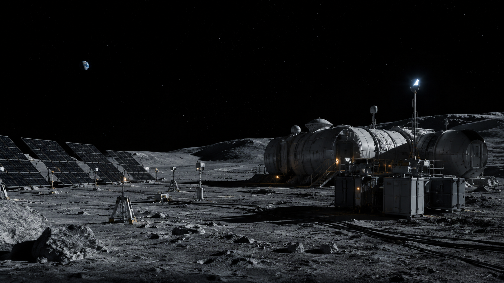
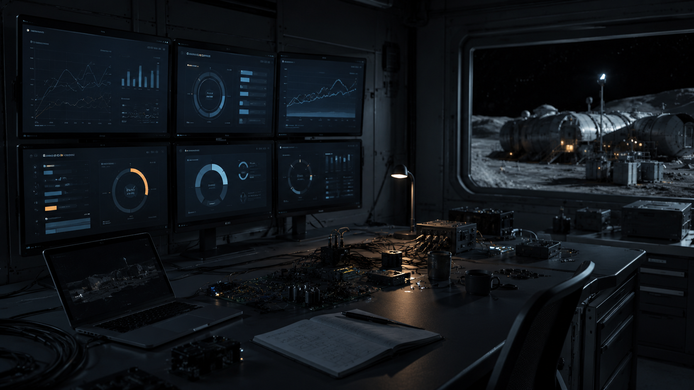
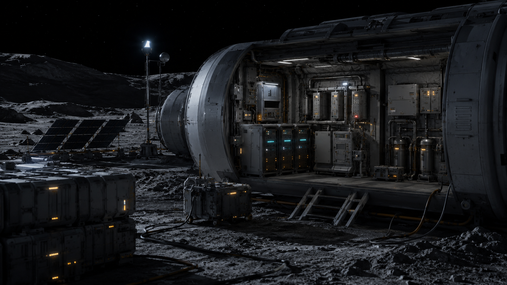

Indústria Espacial · Programa Artemis
O código que mantém a luz acesa na noite mais longa.
Conheça a missãoNa Lua, a noite dura 14 dias. Sem energia, o suporte à vida falha em horas.
Bases do programa Artemis precisam de gestão energética autônoma para sobreviver.

Arduino e sensores na borda, console em Python e modelo matemático de autonomia.
Um sistema que decide e age sozinho — sem precisar de intervenção humana.

Energia, temperatura e qualidade do ar em tempo real.
Cargas críticas protegidas, supérfluas cortadas automaticamente.
Autonomia restante calculada em tempo real pela função exponencial.
Operadores de bases lunares que precisam manter sistemas vivos com energia limitada.
E comunidades isoladas na Terra com energia solar e sem acesso à rede elétrica.

O sistema corta o supérfluo antes que a energia acabe.
Aviso antes do limite crítico, tempo suficiente para reagir.
Sistemas de suporte à vida sempre protegidos em emergência.
Na base ou na Terra: o sistema corta o supérfluo e mantém o essencial vivo.
O mesmo código que protege astronautas pode iluminar uma vila sem rede elétrica.
Sensores leem energia e ambiente
Sistema classifica o estado
Corte automático se necessário
Essencial permanece protegido
Quer acompanhar a missão ou contribuir com ideias para o sistema AURORA?
Preencha o formulário abaixo para entrar em contato com a equipe.